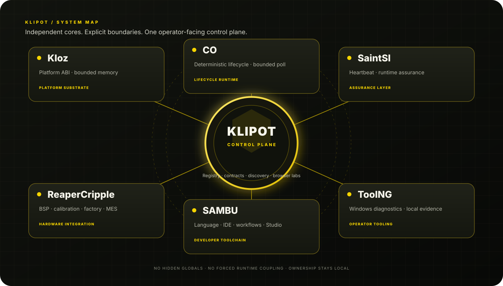

Klipot is the front door to a modular engineering ecosystem. Discover each project's responsibility, follow explicit interfaces, inspect integration rules and test API concepts in safe browser labs — without turning independent systems into one fragile monolith.

07independent repositories
04interactive browser labs
01shared contract family · v1
0front-end package dependencies
One portal. Four practical capabilities.
Useful entry points for builders, integrators and operators.
⌘
Project registry
Find every repository by role, domain or capability. Open source and copy clone commands in one click.
⇄
Contract map
Understand the boundary between cores, optional adapters, version rules and ownership.
▣
Browser workbench
Exercise memory, lifecycle, heartbeat and capability-gate concepts with deterministic demos.
✓
Evidence discipline
Keep simulated states, host checks and real hardware qualification clearly separated.
How the layers connect
Foundation → lifecycle → assurance → production → developer and operator surfaces.
01 · KlozPlatform ABI and bounded memory
02 · CODeterministic lifecycle control
03 · SaintSIHealth observations and integrity
04 · ReaperCrippleBSP, manufacturing and MES
Developer and operator layer
Author workflows with SAMBU; inspect Windows-side Apple evidence with ToolNG; discover everything in Klipot.
SAMBULanguage, IDE, Studio and workflows
ToolNGLocal Windows diagnostics
KlipotRegistry, contracts and labs
Explicit adaptersNo hidden coupling or false status
Repository directory
Seven focused projects
Filter by domain, inspect the role, then jump straight into the source.
Repository maturity labels are curated snapshots, not live CI results. Follow each repository's own build and hardware-validation instructions.
Interactive API concept demos
Small labs. Real rules.
Click the controls, trigger transitions, and see the invariants change. These browser sandboxes model API concepts; they do not execute the C libraries or touch connected hardware.
Kloz · Arena allocator
Caller-owned capacity · power-of-two alignment · no hidden heap
Arena: 0 / 1024 bytes used.
CO · Lifecycle runtime
One step per poll · explicit fault state · guarded shutdown
State: STOPPED · cycles: 0
SaintSI · Heartbeat monitor
Rollover-aware time · stale components are observations, not actions
Component 0x01 · tick 0 · timeout 20 · healthy
ReaperCripple · Capability gate
Validate all required capabilities before running a bootstrap stage